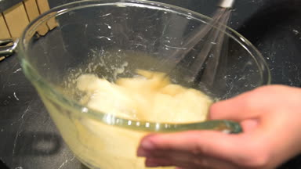
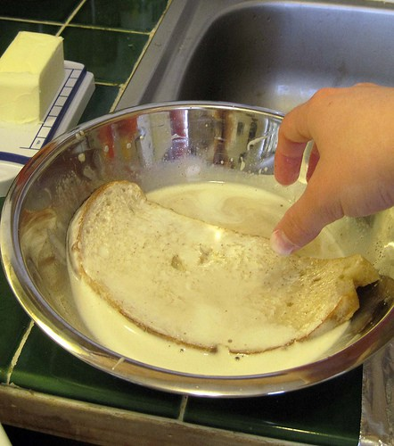
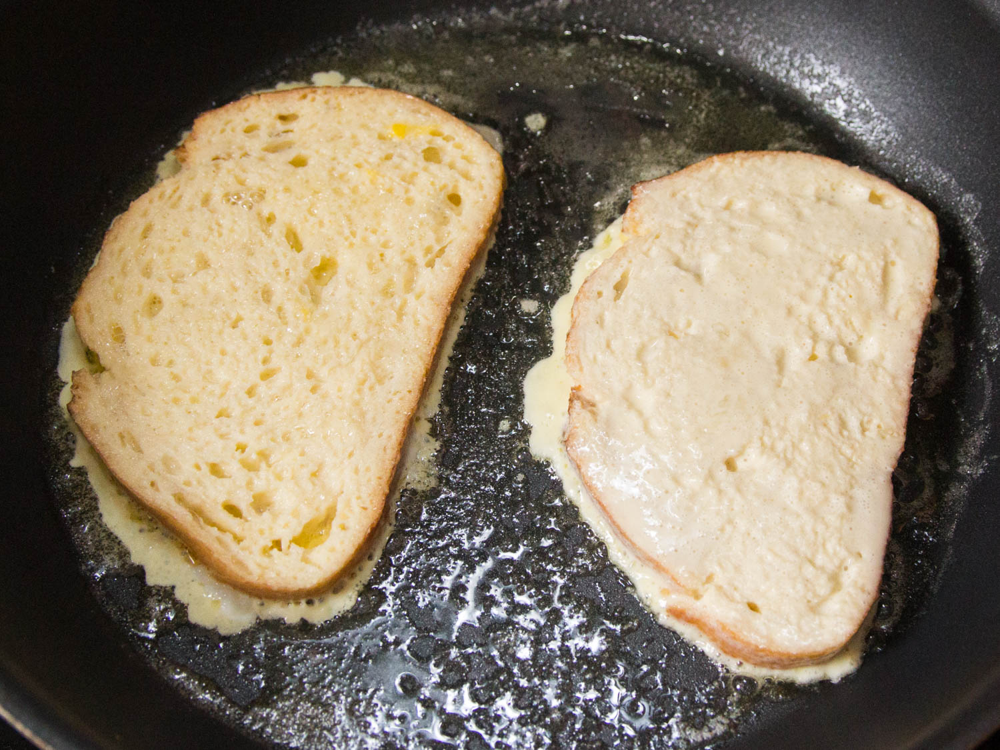

French Toast Recipe
"French toast is one of the better breakfast foods!"
Getting Started:
Ingredients:
- 1 egg
- 1 tsp vanilla extract
- 1/2 tsp ground cinnamon
- 1/4 cup milk
- 4 slices of bread
Preparation:
| Pictures for Reference | Instructions |
|---|---|
|  | Beat egg, vanilla and cinnamon in shallow dish. Stir in milk. |
|  | Dip bread in egg mixture, turning to coat both sides evenly. |
|  | Cook bread slices on lightly greased nonstick griddle or skillet on medium heat until browned on both sides. |